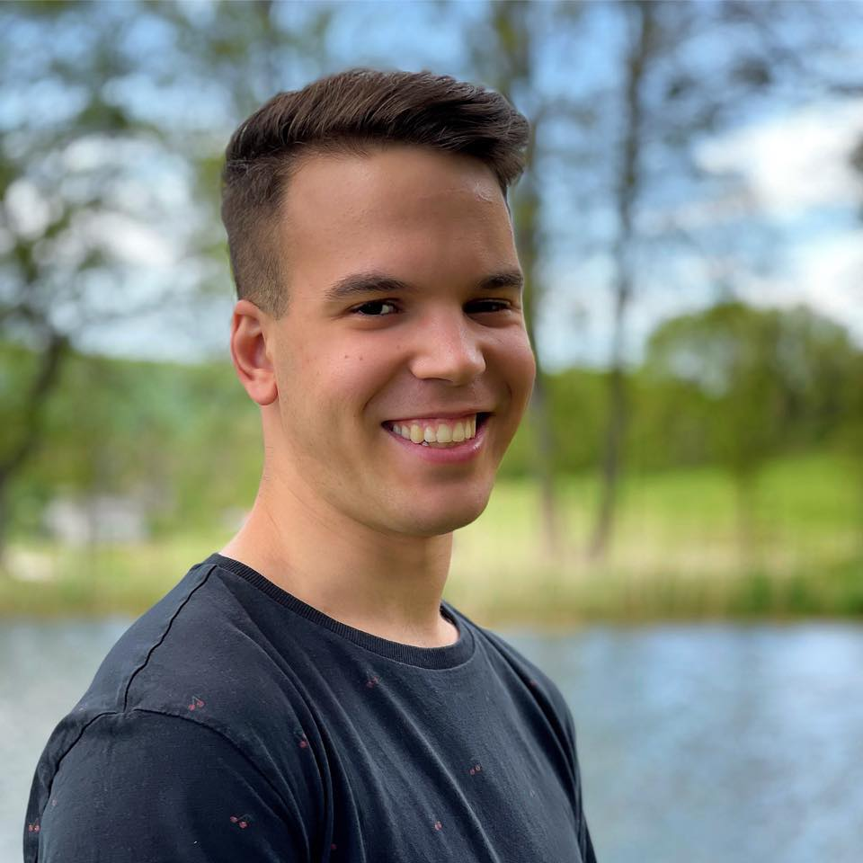

Bemutatkozás

Grzybovsky Ádám vagyok, 20 éves. Veszprémben láttam meg a napvilágot és azóta Balatonfűzfőn élek. Jelenleg Gépészmérnöknek tanulok a Budapesti Műszaki és Gazdaságtudományi Egyetemen. Korábbi tanulmányaimat a Siófoki Perczel Mór Gimnáziumban végeztem. Szeretek bulizni, utazni, zenét hallgatni, és értékes időt tölteni a barátaimmal. Egészen kis korom óta sportolok, bár az elmúlt 1 évben picit szüneteltettem a sportoló karrierem.